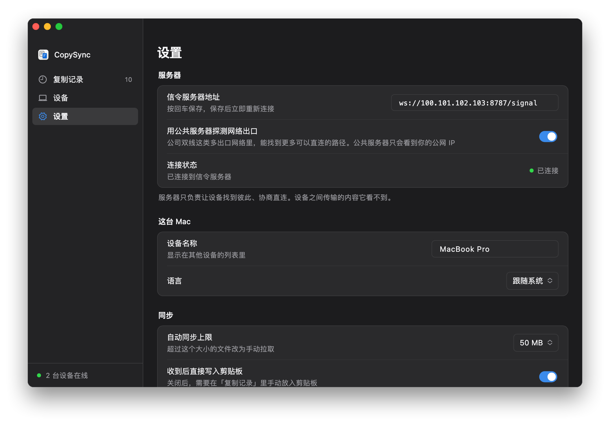

像在同一个局域网里
Tailscale 是一个组网工具：装了它、登录同一个账号的设备，各自分到一个固定的 100 开头的地址，不管实际在哪个网络里，都能用这个地址互相访问。CopySync 的服务器用这个地址安装，客户端也填这个地址，其余和局域网部署一样。
- 服务器还在家里。任意一台常开的 Windows、Mac 或 Linux 电脑，和局域网部署一样。
- 每台电脑都装 Tailscale，登录同一个账号。服务器所在的那台也要装。
- 两层加密。Tailscale 的 WireGuard 隧道里，跑的是 CopySync 自己端到端加密的连接，Tailscale 和你的服务器都看不到内容。
开始之前
- 一台常开的电脑
- 当服务器用，要求和局域网部署一样，关机或睡眠时同步会暂停。它的 Tailscale 地址不会变，不需要在路由器里固定地址。
- 一个 Tailscale 账号
- 个人使用免费，用 Google、Microsoft、GitHub 或 Apple 账号就能登录。所有设备登录同一个账号。
- 每台电脑都装 Tailscale
- Windows、macOS、Linux 都有客户端。用 CopySync 的电脑都要装，一直待在家里的那台也一样。
- 用 ZeroTier 也行
- 其他能给每台设备分配固定虚拟地址的组网工具，做法相同：服务器用它分配的地址安装，客户端填这个地址。下面以 Tailscale 为例。
第 1 步
在每台电脑上装 Tailscale
服务器所在的电脑和每台要同步的电脑，都装上并登录同一个账号。
- 到 Tailscale 官网下载对应系统的客户端并安装。Linux 上运行
curl -fsSL https://tailscale.com/install.sh | sh，再运行sudo tailscale up，打开它给出的链接登录。 - 打开 Tailscale，登录。每台电脑都用同一个账号。
- 登录后，在 Tailscale 的管理后台能看到所有设备，每台都有一个 100 开头的地址。
| 设备 | Tailscale 地址 | 系统 |
|---|---|---|
| mac-mini 服务器 | 100.101.102.103 | macOS |
| macbook-pro | 100.88.20.5 | macOS |
| home-pc | 100.92.41.17 | Windows |
服务器所在的那台电脑，再多做一步
- Windows：在任务栏右下角的 Tailscale 图标上右键，在「Preferences」里勾选「Run unattended」。不然注销之后 Tailscale 会断开，外面的电脑就连不上服务器了。
- Mac：保持登录、不睡眠，确认 Tailscale 登录后会自动打开。CopySync 的服务器也是登录后才运行。
- 关掉密钥过期：Tailscale 默认每 180 天要求设备重新登录一次。在管理后台的 Machines 页面，点服务器那一行最右边的菜单，选「Disable key expiry」。
第 2 步
查服务器的 Tailscale 地址
在服务器所在的电脑上点菜单栏（Windows 上是任务栏右下角）的 Tailscale 图标，菜单里能看到本机的地址；或者在终端里运行 tailscale ip -4。
% tailscale ip -4 100.101.102.103
下面都以 100.101.102.103 为例，换成你的地址。
第 3 步
用这个地址安装服务器
安装脚本默认用局域网地址，这里要带上 Tailscale 地址，外面的电脑才用得到服务器的中转。已经照局域网教程装过的，带上地址再运行一次即可，原来的设置保留。
Windows
- 下载 copysync-server-windows-amd64.zip，右键选「全部解压缩」。已经装过的，用原来解压出的文件夹。
- 打开解压出的文件夹，在窗口顶部的地址栏里输入
cmd，按回车，打开命令提示符。 - 运行
install.cmd 100.101.102.103（换成你的地址），弹出用户账户控制时点「是」。 - 安装在新打开的窗口里进行。最后显示的地址应当是
ws://100.101.102.103:8787/signal。
- 防火墙已经放行：脚本添加的入站规则对所有网络生效，Tailscale 的网卡也包括在内。
- 提示「Windows 已保护你的电脑」时，点「更多信息」，再点「仍要运行」。
C:\Users\me\Downloads\copysync-server-windows-amd64>install.cmd 100.101.102.103
> 停止旧版本 > 安装到 C:\Program Files\CopySync Server > 注册服务 CopySyncServer（中转地址 100.101.102.103） > 在 Windows 防火墙里放行 > 启动 √ 已启动 安装完成：copysync-server 1.3.4，作为 Windows 服务开机自动运行 在每台电脑的 CopySync「设置 → 信令服务器地址」填： ws://100.101.102.103:8787/signal 程序 C:\Program Files\CopySync Server 日志 C:\ProgramData\CopySync Server\server.log 重启 Restart-Service CopySyncServer（管理员 PowerShell） 卸载 双击 uninstall.cmd
macOS
- 打开「终端」，逐行运行，最后一行换成你的地址：
curl -LO https://github.com/baiyuze/copysync/releases/latest/download/copysync-server-macos.tar.gz tar xzf copysync-server-macos.tar.gz cd copysync-server-macos ./install.sh 100.101.102.103 - 最后显示的地址应当是
ws://100.101.102.103:8787/signal。
- 已经装过的，在原来的文件夹里运行
./install.sh 100.101.102.103即可，原来的设置保留。 - 开着系统防火墙的话，脚本最后会给出放行 copysync-server 的命令。
% ./install.sh 100.101.102.103 ▶ 停止旧版本 ▶ 安装到 /Users/me/Library/Application Support/CopySync Server ▶ 写入 LaunchAgent（中转地址 100.101.102.103） ▶ 启动 ✓ 已启动 安装完成：copysync-server 1.3.4，登录这台 Mac 后自动运行 在每台电脑的 CopySync「设置 → 信令服务器地址」填： ws://100.101.102.103:8787/signal 日志 /Users/me/Library/Logs/CopySync/server.log 重启 launchctl kickstart -k gui/501/com.copysync.server 卸载 ./install.sh uninstall
Linux
- 逐行运行，最后一行换成你的地址：ARM 设备把
amd64换成arm64。curl -LO https://github.com/baiyuze/copysync/releases/latest/download/copysync-server-linux-amd64.tar.gz tar xzf copysync-server-linux-amd64.tar.gz cd copysync-server-linux-amd64 sudo ./install.sh 100.101.102.103 - 最后显示的地址应当是
ws://100.101.102.103:8787/signal。
已经装过的：Linux 的安装脚本不会改动已有的配置。把配置里原来的地址换成 Tailscale 地址（下面的 192.168.1.20 换成你原来的地址），再重启服务：
sudo sed -i 's/192.168.1.20/100.101.102.103/g' /etc/copysync/server.env
sudo systemctl restart copysync-server$ sudo ./install.sh 100.101.102.103 ▶ 安装二进制到 /usr/local/bin ▶ 写入 systemd 单元 ▶ 生成配置 /etc/copysync/server.env（中转地址 100.101.102.103） ▶ 启动 ✓ 已启动 安装完成：copysync-server 1.3.4 在每台电脑的 CopySync「设置 → 信令服务器地址」填： ws://100.101.102.103:8787/signal 配置 /etc/copysync/server.env 日志 journalctl -u copysync-server -f 重启 systemctl restart copysync-server 卸载 sudo ./install.sh uninstall 防火墙需放行：TCP 8787（信令）、UDP 3478（STUN 与 TURN）、UDP 32768-60999（中转端口，系统随机分配）
第 4 步
从外面检查一下
找一台不在家里网络的电脑，或者让笔记本连上手机热点，确认 Tailscale 已连接，在浏览器里打开 http://100.101.102.103:8787/healthz。看到下面这一行，在外面也能访问到服务器了。
{"status":"ok","version":"1.3.4"}
打不开的话，看下面的常见问题。
第 5 步
在每台电脑上填地址
打开设置
在每台电脑上打开 CopySync，进入「设置」。服务器所在的那台电脑也一样。
填 Tailscale 地址
在「信令服务器地址」里填
ws://100.101.102.103:8787/signal（换成你的地址），按回车保存。看连接状态
「连接状态」变成绿色的「已连接」就好了。还没配对的话，在「设备」里配对。

家里的电脑也填 Tailscale 地址，不要填局域网地址：这样电脑在家、在外面，地址都不用改。都在家时，数据照样只在家里的网络里走。
常见问题
设备之间显示「直连」，速度却很慢？
CopySync 显示的「直连」，指两台电脑在 Tailscale 的虚拟网里直接相连。Tailscale 自己打不通两台电脑时，会经它在境外的中转服务器（DERP）转发，在国内用就会慢。
在终端里运行 tailscale ping 对方的地址：显示 via DERP，说明 Tailscale 在中转；显示 via 一个 IP 和端口，就是点对点。公司网络、校园网比较容易遇到中转，可以自建 DERP 中转服务器，或者换一种组网工具。
连接状态一直是「未连接」？
先确认这台电脑的 Tailscale 已连接，再在浏览器里打开 http://服务器的 Tailscale 地址:8787/healthz。
打不开的话，看服务器那台电脑是不是睡眠了、Tailscale 是否在线（Windows 上要勾选 Run unattended，Mac 上要保持登录），服务器是不是还用着局域网地址，以及 Mac、Linux 上的防火墙有没有放行。
一定要每台电脑都装 Tailscale 吗？
是的。没装的电脑访问不到 100 开头的地址，在外面的电脑也找不到它。一直待在家里的那台也要装。
已经照局域网教程装好了，要从头来吗？
不用。带上 Tailscale 地址把安装脚本再运行一次（Linux 上改一下配置），然后在每台电脑上把服务器地址改成 Tailscale 地址。已经配对的设备不用重新配对。
Tailscale 能看到我复制的内容吗？
不能。Tailscale 的连接用 WireGuard 端到端加密，里面跑的又是 CopySync 自己的 DTLS 加密连接，两层都只有两台电脑能解开。Tailscale 的服务器只交换设备的公钥和地址，中转服务器也只转发加密后的数据包。
服务器的 Tailscale 地址会变吗？
一般不会。地址跟着设备走，重启、换网络都不变；只有把设备从 Tailscale 里删掉再重新加入，才会换一个。
我有公网 IP，还需要 Tailscale 吗？
不需要。把服务器部署在有公网 IP 的机器上，所有电脑填它的公网地址就行，见公网服务器部署教程。